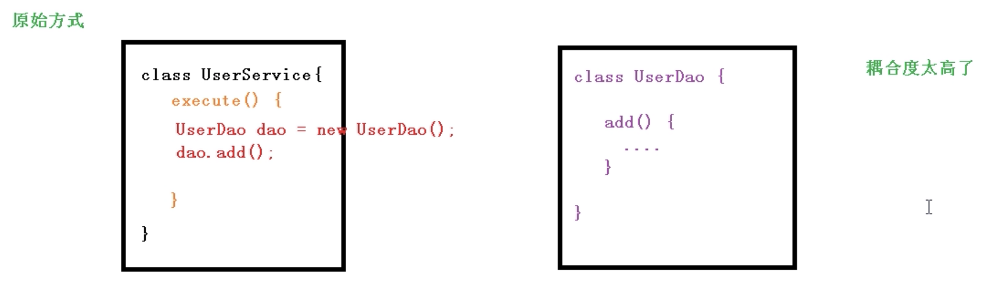
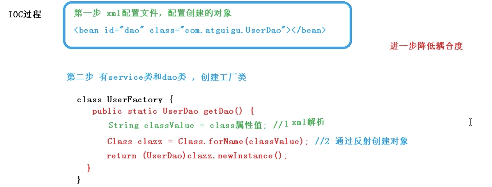
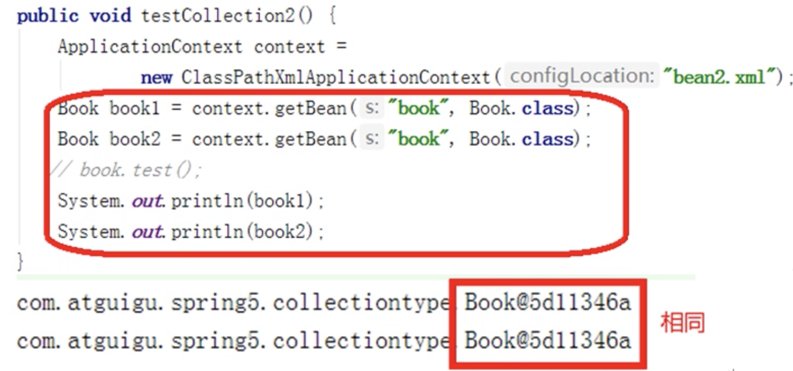
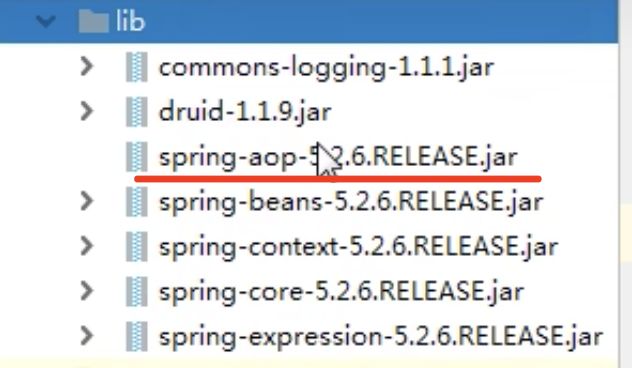

【1】 IOC 容器¶
IOC 的概念¶
IOC 控制反转，是面向对象编程中的一种设计原则，可以用来降低计算机代码之间的耦合度。
- 控制反转，把对象创建和对象之间的调用过程，交给 Spring 进行管理
- 使用 IOC 目的，为了耦合度降低
将对象之间的相互依赖关系交给 IoC 容器来管理，并由 IoC 容器完成对象的注入。
这样可以很大程度上简化应用的开发，把应用从复杂的依赖关系中解放出来。
IoC 容器就像是一个工厂一样，当我们需要创建一个对象的时候，只需要配置好配置文件/注解即可，完全不用考虑对象是如何被创建出来的。
在实际项目中一个 Service 类可能依赖了很多其他的类，假如我们需要实例化这个 Service，你可能要每次都要搞清这个 Service 所有底层类的构造函数，这可能会把人逼疯。
如果利用 IoC 的话，只需要配置好，然后在需要的地方引用就行了，这大大增加了项目的可维护性且降低了开发难度。
IOC 的引入¶
xml 解析、工厂模式、反射
原始方法，创建对象，调用方法。
缺点是耦合度太高了。

工厂模式

IOC 过程
首先是创建xml文件来进行创建的对象的配置
然后使用工厂类对xml进行解析，
解析后通过反射来创建对象，classValue 就是 xml 里面的 com.atguigu.UserDao。
最后返回这个类

这个时候只需要修改 xml 配置文件里面的对象路径就可以了。
IOC 接口（BeanFactory）¶
- IOC 思想基于 IOC 容器完成，IOC 容器底层就是对象工厂
- Spring 里面提供了 IOC 容器实现的两种方式（两个接口）。
- BeanFactory：IOC 容器最基本的实现方式，是 Spring 内部的使用的接口，不提供开发人员使用【特点是，加载配置文件的时候不会创建对象，在获取（使用）对象的时候才会创建对象。】
- ApplicationContext：BeanFactory 接口的子接口，提供更大更强大的功能，一般由开发人员使用【特点是，加载配置文件的时候就会在配置文件对象进行创建。】
- ApplicationContext 接口有实现类
- FileSystemXmlApplicationContext：写文件的全路径（绝对路径）
- ClassPathXmlApplicationContext：写类的路径【通常使用】
- BeanFactory 下面有个子接口 ConfigurableApplictionContext 拓展使用。
XML Bean 管理¶
什么是 Bean 管理？¶
Bean 管理指的是两个操作。
Bean有两个操作：
- Spring 创建对象
- Spring 注入属性
Bean 管理操作有两种方式：
- 基于 XML 配置文件方式实现
- 基于注解方式实现
基于 xml 配置文件方式实现¶
- 基于 XML 方式创建对象
<bean id="user" class="com.javastudy.spring5"> </bean>
在 spring 配置文件中，使用 bean 标签，标签里面添加对应属性，就可以实现对象创建
在 bean 标签有很多属性：
- id 属性：唯一的标识
- class 属性：创建的类的全路径（包类的路径）
- name 属性：可以用特殊符号，功能类似 id 属性
创建对象时候，默认也是执行无参数构造方法完成对象创建。
- 基于 XML 方式注入属性
DI：依赖注入，就是注入属性（DI 是 IOC 的特殊实现）。
依赖注入，前提必须有 IOC 的环境，Spring 管理这个类的时候将类的依赖的属性注入（设置）进来。就是 spring在帮我们创建这个类的实例当中，发现这个类中有一个属性，帮我们把这个属性设置进来。
- 第一种注入方式，使用 set 方法进行注入
- 第二种注入方式，使用参数构造进行注入
set 方法注入¶
package com.javastudy.spring5;
public class Book{
//创建属性
private String bname;
private String bauthor;
//set 方法注入
public void setBname(String bname){
this.bname= bname;
}
public void setBauthor(String bauthor){
this.bauthor= bauthor;
}
//有参数构造注入
public Book(String bname){
this.bname = bnmame;
}
}
传统方式是使用 new 创建对象，然后调用 set 方法。
在 spring 配置文件配置对象创建，配置属性注入。
<?xml version="1.0" encoding="UTF-8"?>
<beans xmlns="http://www.springframework.org/schema/beans"
xmlns:xsi="http://www.w3.org/2001/XMLSchema-instance"
xsi:schemaLocation="http://www.springframework.org/schema/beans
http://www.springframework.org/schema/beans/spring-beans.xsd">
<bean id="userDao" class="com.javastudy.spring5">
<!--使用 property 完成属性注入
name：类里面属性名称
value：向属性注入的值
-->
<property name="bname" value="活着"></property>
</bean>
</beans>
package com.javastudy.spring5;
import org.springframework.context.ApplicationContext;
import org.springframework.context.support.ClassPathXmlApplicationContext;
public class TestIOC{
public static void main(String[] args){
//1. 初始化 spring 容器，加载配置文件
ApplicationContext applicationContext = new ClassPathXmlApplication("bean1.xml");
//2. 加载配置文件时候，对 Bean 进行实例化
Book book = applicationContext.getBean("book",Book.class);
System.out.println(book);
book.testDemo();
}
}
有参构造进行注入¶
- 创建类，定义属性
package com.javastudy.spring5;
public class Orders{
//创建属性
private Stirng oname;
private String address;
public Orders(String oname, String address){
this.oname = oname;
this.address = address;
}
}
- 在 spring 配置文件中进行配置
<?xml version="1.0" encoding="UTF-8"?>
<beans xmlns="http://www.springframework.org/schema/beans"
xmlns:xsi="http://www.w3.org/2001/XMLSchema-instance"
xsi:schemaLocation="http://www.springframework.org/schema/beans
http://www.springframework.org/schema/beans/spring-beans.xsd">
<bean id="userDao" class="com.javastudy.spring5">
<!--使用 property 完成属性注入
name：类里面属性名称
value：向属性注入的值
<property name="bname" value="活着"></property>
-->
<bean id="orders" class="com.javastudy.spring5">
<constructor-arg name="oname" value="电脑"></constructor-arg>
<constructor-arg name="address" value="China"></constructor-arg>
</bean>
</bean>
</beans>
- 测试
package com.javastudy.spring5.testDemo;
@Test
public void testOrders(){
ApplicationContext context = new ClassPathXmlApplicationContext("bean1.xml");
Orders orders = context.getBean("orders",Orders.class);
System.out.println(orders);
orders.testDemo();
}
set 注入的写法简化 - p名称空间注入（了解）¶
- 使用 p 名称空间注入，可以简化基于 xml 配置方式
- 添加 p 名称空间在配置文件中
- 进行属性注入，在 bean 标签里面进行操作
<?xml version="1.0" encoding="UTF-8"?>
<beans xmlns="http://www.springframework.org/schema/beans"
xmlns:xsi="http://www.w3.org/2001/XMLSchema-instance"
xmlns:p="http://www.springframework.org/schema/p"
xsi:schemaLocation="http://www.springframework.org/schema/beans
http://www.springframework.org/schema/beans/spring-beans.xsd">
<bean id="book" class="com.javastudy.spring5.Book" p:bname="活着" p.bauthor="余华">
</bean>
</beans>
XML 其它类型的注入其他类型属性¶
前面的类型都是String，现在看看其他的类型怎么注入。
这里有个字面量的概念，大致意思就是字面上就能看到量的变量。
- NULL 值
- 属性值包含特殊符号
Null¶
public class Book{
private String bname;
private String bauthor;
private String address;
public void setBname(String bname){this.bname = bname;}
public void setBauthor(String bauthor){this.bauthor = bauthor;}
public void setAddress(String address){this.address = address;}
}
public void testDemo(){
System.out.println(bname+"::"+bauthor+"::"+address);
}
如果是正常有值进行注入的话：
<?xml version="1.0" encoding="UTF-8"?>
<beans xmlns="http://www.springframework.org/schema/beans"
xmlns:xsi="http://www.w3.org/2001/XMLSchema-instance"
xsi:schemaLocation="http://www.springframework.org/schema/beans
http://www.springframework.org/schema/beans/spring-beans.xsd">
<bean id="userDao" class="com.javastudy.spring5">
<!--使用 property 完成属性注入
name：类里面属性名称
value：向属性注入的值
-->
<property name="bname" value="活着"></property>
<property name="bauthor" value="余华"></property>
<property name="address" value="北京"></property>
</bean>
</beans>
但是如果这个地址是一个空值（NULL）那应该怎么办呢？
<?xml version="1.0" encoding="UTF-8"?>
<beans xmlns="http://www.springframework.org/schema/beans"
xmlns:xsi="http://www.w3.org/2001/XMLSchema-instance"
xsi:schemaLocation="http://www.springframework.org/schema/beans
http://www.springframework.org/schema/beans/spring-beans.xsd">
<bean id="userDao" class="com.javastudy.spring5">
<!--使用 property 完成属性注入
name：类里面属性名称
value：向属性注入的值
-->
<property name="bname" value="活着"></property>
<property name="bauthor" value="余华"></property>
<property name="address">
</null>
</property>
</bean>
</beans>
如上，在 property 里面写一个</null>标签。
特殊符号¶
下面这种写法是错误的。<< 是特殊符号。
<property name="bname" value="<<活着>>"></property>
我们需要把它进行转义。
<property name="bname">
<value><![CDATA[<活着>>]]></value>
</property>
注入属性 - 外部 Bean¶
什么是外部 Bean？
- 创建两个类，service 类和 dao 类
- 在 service 调用 dao 里面的方法
package com.javastudy.spring5.service;
public class UserService{
public void add(){
System.out.println("service add...");
//普通方式是在service 里面创建个对象
UserDao dao = new UserDaoImpl();
dao.update();
}
}
package com.javastudy.spring5.dao;
public interface UserDao{
public void update();
}
package com.javastudy.spring5.dao;
public class UserDaoImpl implements UserDao{
@Override
public void update(){
System.out.println("dao update ...");
}
}
- 在 spring 的配置文件中进行配置
这个时候我们想要注入 UserDao 这个对象类型。
package com.javastudy.spring5.service;
import com.javastudy.spring5.dao.UserDao;
public class UserService{
private UserDao userDao;
public void setUserDao(UserDao userDao){
this.userDao = userDao;
}
public void add(){
System.out.println("service add...");
userDao.update();
}
}
<?xml version="1.0" encoding="UTF-8"?>
<beans xmlns="http://www.springframework.org/schema/beans"
xmlns:xsi="http://www.w3.org/2001/XMLSchema-instance"
xsi:schemaLocation="http://www.springframework.org/schema/beans
http://www.springframework.org/schema/beans/spring-beans.xsd">
<!--1 service 和 dao 对象创建 -->
<bean id="userService" class="com.javastudy.spring5.UserService">
<!--注入userDao对象
name属性值：类里面属性名称
ref属性，创建userDao对象bean标签id值
-->
<property name="userDao" ref="userDao"></property>
</bean>
<bean id="userDao" class="com.javastudy.spring5.UserDaoImpl"> </bean>
</beans>
第 8 行 ，要在class里面写上类的路径，但是由于 interface 没有方法的实现，所以我们放 UserDaoImpl。
public class TestBean{
public void testAdd(){
//1.加载spring配置文件
ApplicationContext context = new ClassPathXmlApplicationContext("bean2.xml");
//2.获取配置创建的对象
UserService userService = context.getBean("userService",UserService.class);
userService.add();
}
}
执行结果：
service add...
dao update ...
注入属性 - 内部 bean和级联赋值¶
内部 bean¶
- 一对多的关系：部门和员工，一个部门有多个员工，一个员工只有一个部门；
- 在实体类来表示一对多关系（一个表就是一个类），员工所属的部门属性，用对象类型来表示；
package com.javastudy.spring5.bean;
public class Dept{
private String dname;
public void setDname(String dname){
this.dname = dname;
}
}
package com.javastduy.spring5.bean;
public class Emp{
private String ename;
private String gender;
//员工属于某一个部门，用 Dept 对象来表示
private Dept dept;
public void setDept(Dept dept){
this.dept = dept;
}
public void setEname(String ename){
this.ename = ename;
}
public void setGender(String gender){
this.gender = gender;
}
}
这样我们就建立了两个类，这两个类之间还没有建立关系。
怎么表示多个员工？
- 在 Spring 配置文件中进行相关配置
<?xml version="1.0" encoding="UTF-8"?>
<beans xmlns="http://www.springframework.org/schema/beans"
xmlns:xsi="http://www.w3.org/2001/XMLSchema-instance"
xsi:schemaLocation="http://www.springframework.org/schema/beans
http://www.springframework.org/schema/beans/spring-beans.xsd">
<!--内部bean -->
<bean id="emp" class="com.javastudy.spring5.bean.Emp">
<!--设置两个普通属性-->
<property name="dept">
<bean id="dept" class="com.javastudy.spring5.bean.Dept">
<property name="dname" value="软件研发部"></property>
</bean>
</property>
</beans>
在一个 bean 里面嵌套了另外一个 bean，这就叫做内部 bean。
级联赋值¶
修改 xml 文件
<?xml version="1.0" encoding="UTF-8"?>
<beans xmlns="http://www.springframework.org/schema/beans"
xmlns:xsi="http://www.w3.org/2001/XMLSchema-instance"
xsi:schemaLocation="http://www.springframework.org/schema/beans
http://www.springframework.org/schema/beans/spring-beans.xsd">
<!--内部bean -->
<bean id="emp" class="com.javastudy.spring5.bean.Emp">
<!--设置两个普通属性-->
<property name="ename" value="lucy"></property>
<property name="gender" value="lucy"></property>
<!--级联赋值-->
<property name="dept"></property>
</bean>
<bean id="dept" class="com.javastudy.spring5.bean.Dept">
<property name="dname" value="软件研发部"></property>
</bean>
</beans>
注入集合属性¶
- 注入数组类型的属性
- 注入list集合类型的属性
- 注入Map集合类型的属性
注入数组类型的属性¶
import java.util.List;
import java.util.Map;
import java.util.Set;
public class Stu{
//1 数组类型属性
private String[] courses;
//2 list集合类型属性
private List<String> list;
//3 map集合类型属性
private Map<String,String> maps;
//4 set集合类型属性
private Map<String,String> sets;
public void setSets(Set<String> sets){
this.set = set;
}
public void setCourses(String[] courses){
this.courses = courses;
}
public void setList(List<String> list){
this.list = list;
}
public void setMap(Map<String,String> maps){
this.maps = maps;
}
}
<?xml version="1.0" encoding="UTF-8"?>
<beans xmlns="http://www.springframework.org/schema/beans"
xmlns:xsi="http://www.w3.org/2001/XMLSchema-instance"
xsi:schemaLocation="http://www.springframework.org/schema/beans
http://www.springframework.org/schema/beans/spring-beans.xsd">
<!--1 集合类型属性注入 -->
<property name="courses">
<array>
<value>java课程</value>
<value>数据库课程</value>
</array>
</property>
<!--2 list类型属性注入 -->
<property name="list">
<list>
<value>张三</value>
<value>法外狂徒</value>
</list>
</property>
<!--3 map类型属性注入 -->
<property name="maps">
<map>
<entry key="JAVA" value="java"></entry>
<entry key="PHP" value="php"></entry>
</map>
</property>
<!--4 sets类型属性注入 -->
<property name="sets">
<sets>
<value>Mysql</value>
<value>Redis</value>
</sets>
</property>
</beans>
XML 自动装配（少用）¶
自动装配就是根据指定装配规则（属性名称或者属性类型），Spring 自动将匹配的属性值进行注入。
还是使用部门和员工的例子：
package com.javastudy.spring5.autowrie;
public class Emp{
private Dept dept;
public void setDept(Dept dept){
this.dept = dept;
}
@Override
public String toString(){
return "Emp{"+
"dept=" + dept +
'}';
}
public void test(){
System.out.println(dept);
}
}
package com.javastudy.spring5.autowrie;
public class Dept{
private String toString{
return "Dept{}";
}
}
普通方式可以使用外部 bean 的方式进行注入。那么自动装配的 bean 是怎么实现的呢？
Bean 标签中有一个属性叫做 autowrie 可以实现自动装配。
- byName 根据属性名称注入，注入值 bean 的 id 值和类属性名称一样
- byType 根据属性类型注入
<bean id="emp" class="com.javastudy.spring5.autowire.Emp" autowire="byName">
</bean>
<bean id="dept " class="com.javastudy.spring5.autowire.Emp">
</bean>

FactoryBean 的创建¶
Spring 有两种 Bean，一种是普通的 Bean，另一种是 FactoryBean。
普通 Bean：在 Spring 里面， 配置文件中定义的类型就是返回的类型。
工厂 Bean：在配置文件定义 bean 类型可以和返回类型不一样。
创建工厂 Bean 有以下两步：
- 第一步，创建类，让这个类作为工厂 bean，实现接口 FactoryBean。
- 第二步，实现接口里面的方法，在实现的方法中定义返回的 bean 类型。
第一步：创建类
package com.javastudy.spring5.factorybean;
public class MyBean{
}
把对象通过配置文件创建出来：
<?xml version="1.0" encoding="UTF-8"?>
<beans xmlns="http://www.springframework.org/schema/beans"
xmlns:xsi="http://www.w3.org/2001/XMLSchema-instance"
xsi:schemaLocation="http://www.springframework.org/schema/beans
http://www.springframework.org/schema/beans/spring-beans.xsd">
<bean id="myBean" class="com.javastudy.spring5.factorybean.MyBean"></bean>
</beans>
输出一下这个 Bean
public void test3(){
ApplicationContext context = new ClassPathXmlApplicationContext("bean3.xml");
//返回类型也是 MyBean,普通 Bean
MyBean myBean = context.getBean("myBean",MyBean.class);
System.out.println(myBean);
}
第二步：实现接口里面的方法
想要变成 FactoryBean 需要让 MyBean 实现一个 FactoryBean 接口：
package com.javastudy.spring5.factorybean;
public class MyBean implements FactoryBean<Course>{
//定义返回 bean
@Override
public Course getObject() throws Exception{
Course course = new Course();
course.setCname("abc");
return course;
}
}
这个时候这个测试的第 4 行里面应该进行修改。
public void test3(){
ApplicationContext context = new ClassPathXmlApplicationContext("bean3.xml");
//返回类型也是 MyBean,普通 Bean
MyBean myBean = context.getBean("myBean",Course.class);
System.out.println(myBean);
}
Bean 的作用域¶
什么是 Bean 的作用域？
有两个知识点需要了解：
- 在 Spring 里面，设置创建 bean 实例是单实例还是多实例
- 在 Spring 里面，默认情况下，bean 是单实例对象

想要设置单实例还是多实例，在 Spring 配置文件 bean 标签里面有属性（scope）用于设置单实例还是多实例。
scope 属性值有两个值：
- 默认值，singleton，表示是单实例对象
- prototype 表示是多实例对象
<bean id="book" class="com.javastudy.spring5.collectiontype.Book" scope="singleton">
<property name="list" ref="bookList"></property>
</bean>
singleton 和 prototype 区别：
- singleton 单实例，prototype 多实例
- 设置 scope 值是 singleton 时候，加载 spring 配置文件时候就会创建单实例对象；设置 scope 值是 prototype 时候，不是在加载 spring 配置文件时候创建对象，在调用 getBean 方法时候创建多实例对象
Bean 生命周期（重点）¶
参考文章：
Spring Bean的生命周期（非常详细） - Chandler Qian - 博客园
生命周期就是从对象创建到对象销毁的过程。
在 Spring 的 IOC 容器中可以管理 bean 的生命周期，Spring 允许在 bean 生命周期内特定的时间点执行指定的任务。
生命周期有以下：
- 通过构造器创建 bean 实例（无参数构造）
- 为 bean 的属性设置值和对其他 bean 引用（调用 set 方法）
- 调用 bean 的初始化的方法（需要进行配置初始化的方法）
- bean 可以使用了（对象获取到了）
- 当容器关闭时候，调用 bean 的销毁方法（需要进行配置销毁的方法）
这里需要引入 Bean 后置处理器的概念：
什么是 bean 的后置处理器？bean 后置处理器允许在调用初始化方法前后对 bean 进行额外的处理。
加入后置处理器之后生命周期变为 7 步：
- 通过构造器创建 bean 实例（无参数构造）
- 为 bean 的属性设置值和对其他 bean 引用（调用 set 方法）
- 把 bean 实例传递 bean 后置处理器的方法
- 调用 bean 的初始化的方法（需要进行配置初始化的方法）
- 把 bean 实例传递 bean 后置处理器的方法
- bean 可以使用了（对象获取到了）
- 当容器关闭时候，调用 bean 的销毁方法（需要进行配置销毁的方法）
注解 Bean 管理¶
什么是注解¶
- 注解是代码的特殊标记。格式：@注解名称（属性名称=属性值，属性名称=属性值...）
- 使用注解，注解作用在类上面，方法上面，属性上面
- 使用注解的目的：简化 xml 配置
常见注解及开发流程¶
@Component： 游戏中普通的注解
@Service ：业务逻辑层以及Service层
@Controller： 外部层
@Repository ：dao层即持久层
功能是一样的，都可以用来创建对象，只不过把每个对象用在不同地方，以便查看。
对象的创建¶
第一步：引入 AOP 的依赖

第二步：开启组件扫描
<?xml version="1.0" encoding="UTF-8"?>
<beans xmlns="http://www.springframework.org/schema/beans"
xmlns:xsi="http://www.w3.org/2001/XMLSchema-instance"
xmlns:context="http://www.springframework.org/schema/context"
xsi:schemaLocation="http://www.springframework.org/schema/beans
http://www.springframework.org/schema/beans/spring-beans-3.0.xsd
http://www.springframework.org/schema/context
http://www.springframework.org/schema/context/spring-context-3.0.xsd">
<!--开启组件扫描
1.如果扫描多个包，多个包使用逗号隔开
2. 扫描包上层目录
-->
<context:component-scan base-package="com.javastudy"></context:component-scan>
</beans>
base-package如果定义多个包，可以加全路径，分别用逗号隔开 或者 是放置上层目录。
第三步：创建类，在类上面添加创建对象注解。
package com.javastudy.spring5.service;
import org.springframework.sterotype.Component;
//在注解里面value属性值可以省略不写
//默认值是类名称，首字母小写
@Component(value = "userService") //<bean id="userService" class=".."/>
//@Repository 也可以实现一样的效果
public class UserService{
public void add(){
System.out.println("service add...");
}
}
import org.springframework.context.support.ClassPathXmlApplicationContext;
public class TestSpring5Demo1{
@Test
public void testService(){
ApplicationContext context = new ClassXmlApplicationContext("bean1.xml");
UserService userService = context.getBean("userService",UserService.class);
System.out.println(userService);
userService.add();
}
}
第四步：开启组件扫描细节配置。
如果引入的包中不加说明，默认会被所有包都扫描了。
所以我们可以加一些说明，过滤或者添加说明只扫描一些包。
自定义一个过滤，定义扫描的注解类。
- use-default-filters="false" 表示现在不使用默认 filter，自己配置 filter
- context:include-filter，设置扫描哪些内容
- type 只扫描这种注解类
- expression 表示扫描的为该注解类
<!--示例 1
-->
<context:component-scan base-package="com.javastudy" use-defaultfilters="false">
<context:include-filter type="annotation"
expression="org.springframework.stereotype.Controller"/><!--代表只扫描Controller注解的类-->
</context:component-scan>
不定义一个过滤，扫面的所有内容，但可设置内容不扫描。
context:exclude-filter： 设置哪些内容不进行扫描。
<!--示例 2
-->
<context:component-scan base-package="com.atguigu">
<context:exclude-filter type="annotation"
expression="org.springframework.stereotype.Controller"/><!--表示Controller注解的类之外一切都进行扫描-->
</context:component-scan>
第五步：基于注解方式实现属性注入
- 把 service 和 dao 对象创建，在 service 和 dao 类添加创建对象注解；
- 在 service 注入 dao 对象，在 service 类添加 dao 类型属性，在属性上面使用注解。（实现属性注入）
定义两个类，一个接口实现类，一个类写函数
接口实现类：
@Repository(value = "userDaoImpl1")
public class UserDaoImpl implements UserDao {
@Override
public void add() {
System.out.println("dao add.....");
}
}
@Autowired：根据属性类型自动装配
@Autowired //根据类型进行注入
private UserDao userDao;
@Qualifier(value=" ")：根据属性名称自动注入
@Autowired //根据类型进行注入
@Qualifier(value = "userDaoImpl1") //根据名称进行注入
private UserDao userDao;
@Resource：可根据属性类型或者名称注入
@Resource(name = "userDaoImpl1") //根据名称进行注入
private UserDao userDao;
@Value：注入普通类型的注入
注解不是对象类型的定义，可以是字符串等其他
@Value(value = "abc")
private String name;
完全注解开发¶
完全注解开发指的是，不使用 xml 配置文件。完全地使用注解开发。
主要是引用两个注解：
@Configuration 作为配置类的提示
@ComponentScan 扫描配置类的注解
创建配置类，替代 xml 配置文件。
@Configuration //作为配置类，替代xml配置文件
@ComponentScan(basePackages = {"com.atguigu"})
public class SpringConfig {
}
测试类和之前不一样，
之前是加载配置文件 xml，
现在是 new 一个对象，对象为注解的配置类，即加载这个配置类 AnnotationConfigApplicationContext。
@Test
public void testService2() {
//加载配置类
ApplicationContext context
= new AnnotationConfigApplicationContext(SpringConfig.class);
UserService userService = context.getBean("userService", UserService.class);
System.out.println(userService);
userService.add();
}
更新: 2024-03-29 22:55:09
原文: https://www.yuque.com/xiaoshan_wgo/codingnotes/uwkbbnekgkzz4tgg